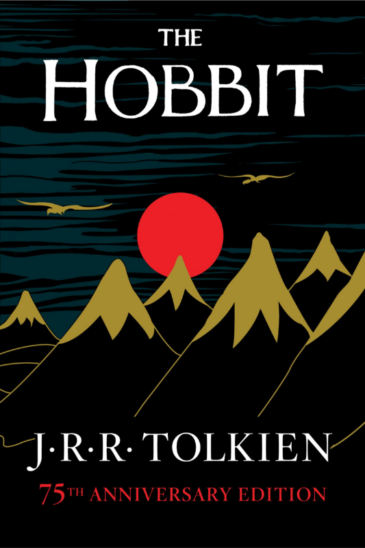

Welcome to the Squash Garden

Take a look at the Newest Release
The Hobbit, by J.R.R. Tolkien, is a classic fantasy novel about the home-loving hobbit Bilbo Baggins, who is recruited by the wizard Gandalf and a company of dwarves to help reclaim their treasure from the dragon Smaug in the Lonely Mountain. The story follows Bilbo's reluctant journey, during which he finds a magic ring, encounters creatures like goblins and giant spiders, and undergoes a personal transformation from a comfortable homebody to a courageous hero, setting the stage for The Lord of the Rings.
-
Book 1
Great Gatsby
-
Book 2
To Kill a Mockingbird
-
Book 3
1984